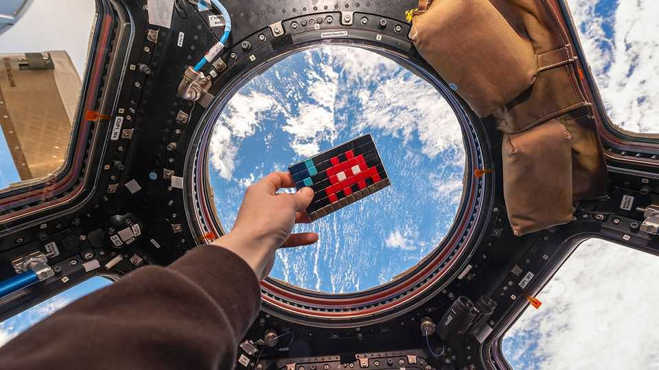
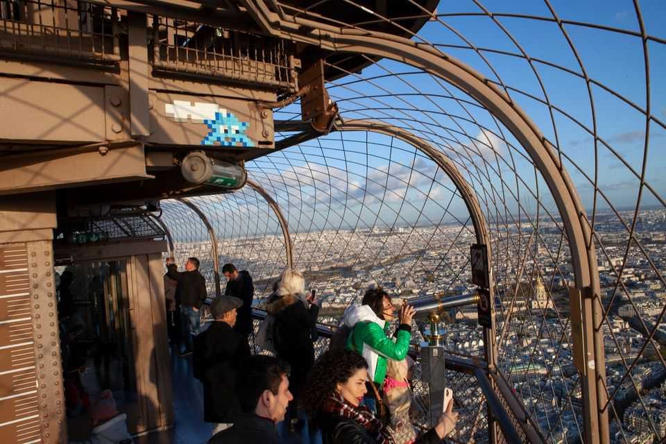
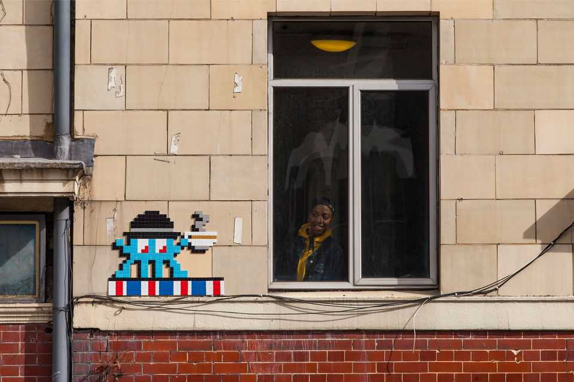

A mystery street artist is taking over cities
You can hunt for his mosaics in Paris and beyond
July 16th 2026

STANDING AT THE top of the Eiffel Tower, almost everyone looks down. Tourists jostle to peer at Paris’s famous landmarks and the snaking Seine. Yet those in the know gaze upwards: they climb to the highest public platform to view not the metropolis, but a mosaic. Up in one nook is a small pixelated artwork made from ceramic tiles, which depicts a blue creature with a cloud.
Invader, the Frenchman behind the mosaic, is one of the most prolific street artists in the world. (Yes, he is even busier than Banksy.) He has planted more than 1,500 works across Paris alone. There are thousands more such “invasions” in over 80 cities around the world, from New York to Tokyo. His pixelated pictures have been affixed to the Hollywood sign and a ski lift in the Swiss Alps; they lie at the bottom of the ocean near Cancún and orbit Earth in the International Space Station (pictured above).

Like any successful intruder, he often works under cover of darkness. (Invader has installed almost every piece himself, from Miami to Marrakech.) And, like any serious street artist, his identity is a secret. That hasn’t stopped him from gaining fans. If you know a child in a city that has been invaded, chances are you’ve heard of FlashInvaders, an app on which you score points for finding (or “flashing”) the mosaics. The game has more than 550,000 players, up from about 360,000 in 2024. Players have logged some 47m flashes to date.
Invader uses the ancient practice of mosaic to create figures inspired by retro video games. Each tile acts as a “perfect pixel”, as Rafael Schacter, a street-art expert at University College London puts it, which makes the mosaics look like digital images. Many are variations of the crabs and UFOs found in “Space Invaders” (1978). Others reflect their surroundings, as with a fox drinking a cup of tea in London.

The pixels also mean the images can be scanned on a phone, a bit like a QR code, to play FlashInvaders. The aim of the game is not only to interact with fans, says Invader—who spoke to The Economist via email to stay anonymous—but also to spark curiosity and urban dérive (exploration). Searching for the mosaics takes you to parts of cities you wouldn’t normally see. The game can require detective work, as players must avoid being duped by impostors who try to mimic Invader’s style.
FlashInvaders has drawn comparisons to Pokémon GO, an augmented-reality app, though it was created two years earlier, in 2014. Both games encourage players to go outside in pursuit of their favourite monster or mosaic. The app also fits with a wider trend to merge digital and physical play for children, from app-assisted board games to LEGO bricks with built-in chips that respond to sound and movement. Yet FlashInvaders is free: the app is purely a passion project and makes no money.
The app stands out because it encourages people to “look at their environment in a different way”, notes Mr Schacter. Mobile games are often criticised for glueing people to their phones, but this one teaches you to take notice of the world around you. Whether on a little-known street or at the top of the Eiffel Tower, it’s always worth looking up. ■
For more on the latest books, films, TV shows, albums and controversies, sign up to Plot Twist, our weekly subscriber-only newsletter